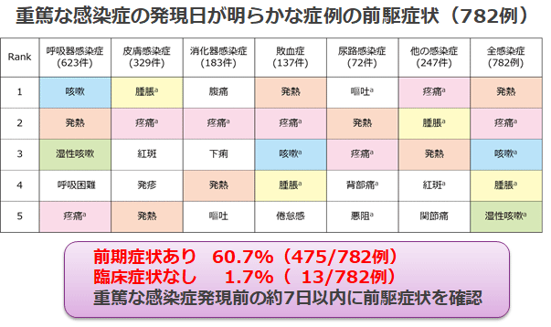
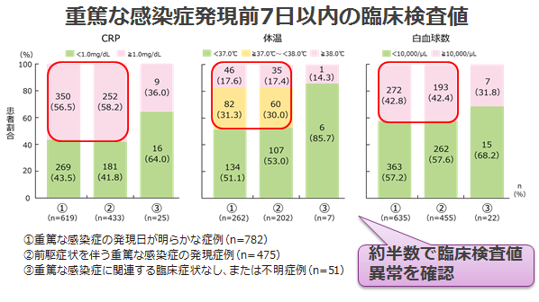

重篤な感染症発現前に何らかの感染症のサインは認められる
- ●市販後有害事象報告DBから、TCZ投与中のRA患者に認められた重篤な感染症をレトロスペクティブに調査し、臨床経過から重篤な感染症発現の前駆症状※についてテキストマイニングにより解析
※重篤な感染症の前駆症状は、重篤な感染症発現の28日前までに認められた症状と定義
- ●2008年4月~2015年4月にTCZの有害事象が報告された症例（RA）7,653例のうち、重篤な感染症を発現した1,221例において、重篤な感染症の発現日が明らかな症例数は782例であった。


発熱、疼痛、咳嗽、腫脹などの感染症のサインは認められる。CRPだけが感染症の指標ではない。